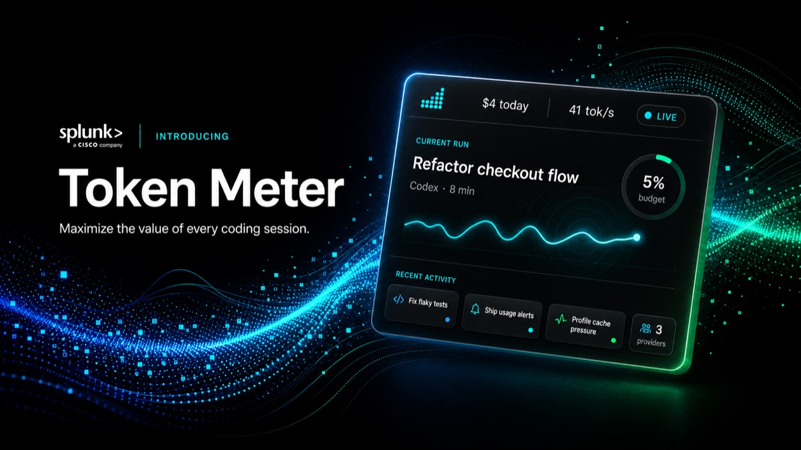
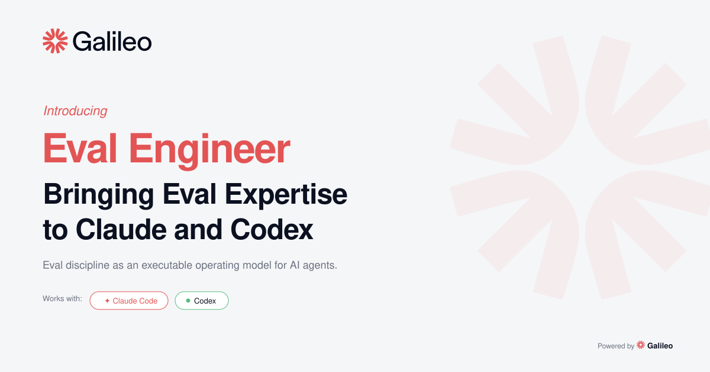
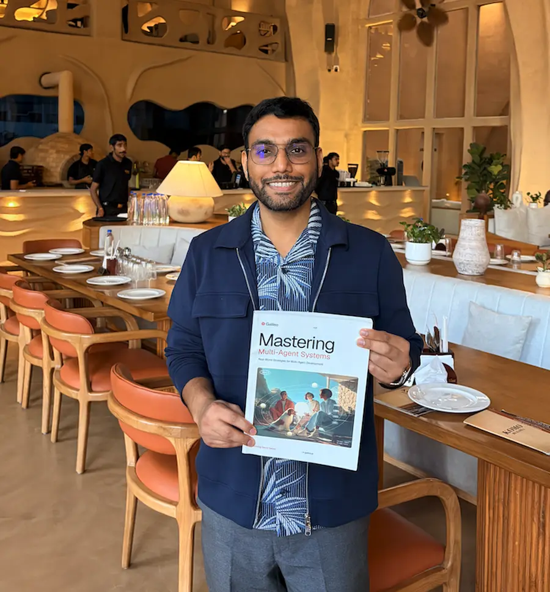

Token Meter
A local-first dashboard for what coding agents spend: tokens, context, cost, and time. Works with Claude Code, Codex, Cursor, OpenCode, Kiro, and Pi.
Developer tools, agent skills, open models, public benchmarks, and the books that explain them.
Jina AI → Enterpret → Galileo → Cisco
Tools

A local-first dashboard for what coding agents spend: tokens, context, cost, and time. Works with Claude Code, Codex, Cursor, OpenCode, Kiro, and Pi.
Skill packages

A skill package that turns production traces into a root-cause diagnosis, a bounded fix plan, and a verification plan.
Models
Qwen2 and Llama 3 models fine-tuned for retrieval-augmented generation, built to answer from evidence rather than memory.
ChatRAG-Bench score
Benchmarks

30+ models tested on 500 multi-turn support scenarios across banking, healthcare, investment, telecom, and insurance.
Books

How to build trust in production AI: metrics, LLM judges, expert review, small eval models, and guardrails.
Writing

The model is the engine; the harness is the car.
AI engineering
Evals
Talks
Experience
I take AI from research to shipped product. I also founded Maxpool, a community for AI engineers, and write Pakodas.
Tokenomics and evaluation for AI agents.
Open-source evals and benchmarks, plus five books. Acquired by Cisco.
Founding engineer. Semantic search, NLP pipelines, and MLOps.
Employee #6. Open-source neural search.
Search, recommendations, and quantitative ML.